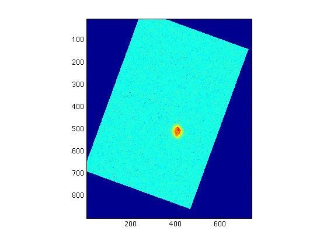

Making composite images
Assuming that we have the H-alpha image Ha and [OIII] image O3, both rotated (RoHa and RoO3) so that the major axis is vertical:
imagesc(RoHa)
axis image; colorbar;
imagesc(RoO3)
axis image; colorbar;
Remember that we need to shift one of the images so that the structure is aligned (See Shifting Images for more details):
HaS = imshift(RoHa,Nrow,Ncol);
imagesc(HaS); axis image;
 Before we combine these two aligned maps RoO3 and HaS, be aware of the fact that imrotate may change the size of the rotated array (which depends on the rotating angle). This means that even though the original maps of H-alpha and [OIII] have the same size, the rotated maps RoHa and RoO3 may not. We can use size to check the dimensions of the two arrays we are going to use for making composite image:
size(HaS)
ans = 897 741
size(RoO3)
ans = 905 769
Fortunately, there's no structure near the edge, so we can cut the larger map (in this case, RoO3) off to fit the smaller map (HaS):
cutO3 = RoO3(1:897,1:741);
Now we are ready to combine images. Firstly we need to create a matrix that has 3 planes of the correct size:
rgb = zeros([size(HaS),3]);
The name rgb means it's a combination of Red, Green, and Blue images, one in each plane.
In this lab, we use H-alpha for red, and [OIII] for both green and blue. Note that we still need to normalize the two images before insert them into the three planes of rgb so that all values are between 0 and 1.
The function imscale provides an easy way to re-scale the images:
rgb(:,:,1) = imscale(HaS, 300, 100);
This rescales the shifted H-alpha image using the cut-off values 100 and 300, and insert it in the first plane (the red).
We then store the normalized [OIII] image in both green and blue, also using cut-off values 100 and 300:
rgb(:,:,2) = imscale(cutO3, 300, 100); rgb(:,:,3) = imscale(cutO3, 300, 100);
Now we can display the image:
imagesc(rgb)
axis image
This image may look weird in color, because we didn't find the best cut-off values for both of the H-alpha and [OIII] maps. Try use 250,100 for H-alpha and 350,150 for [OIII]. What do you conclude?
You should play with the rotating angles, the shifting indices, and the cut-off values to make a (you-think-it's) perfect composite image!